 |
 |

Local preview of the terminal layout. In the README, images are embedded with
<img src="./…"> and the animations (SMIL / CSS keyframes) play
because they live inside each SVG. The portrait and wordmark only refresh when you
regenerate them; the heatmap is rebuilt daily by GitHub Actions.